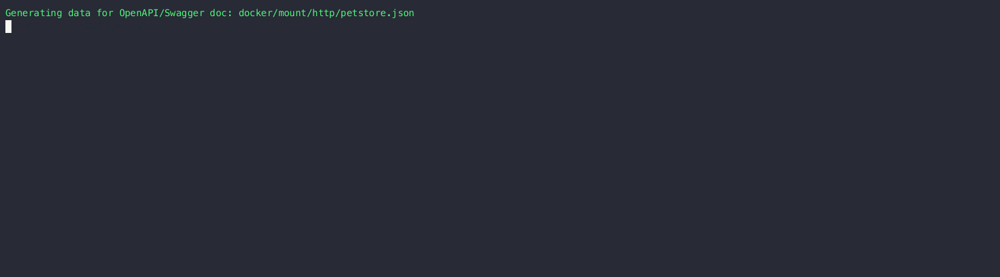
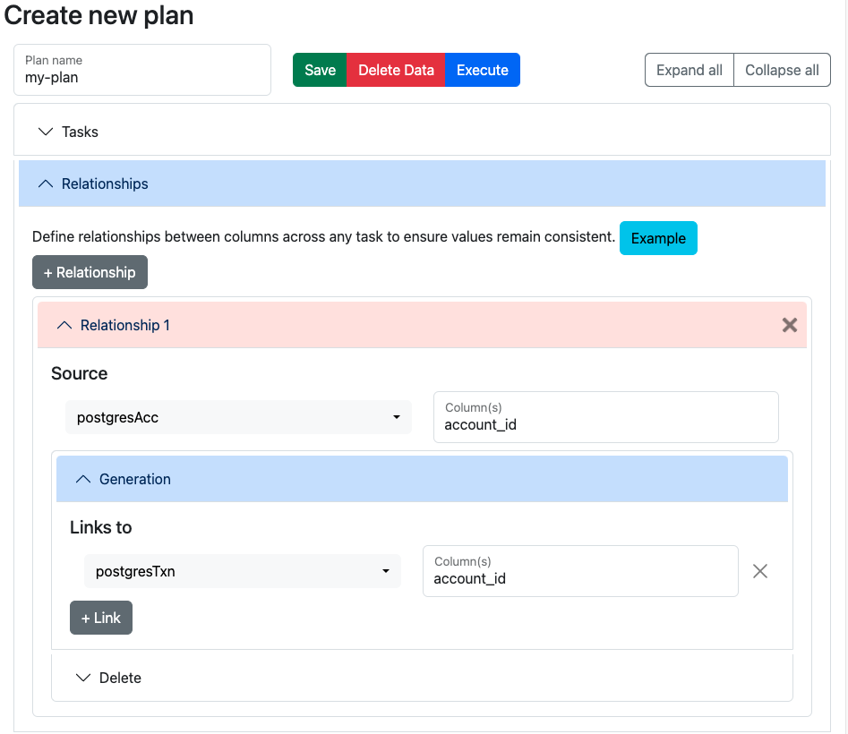

HTTP Source
Creating a data generator based on an OpenAPI/Swagger document.

Requirements
- 10 minutes
- Git
- Gradle
- Docker
Get Started
First, we will clone the data-caterer-example repo which will already have the base project setup required.
HTTP Setup
We will be using the http-bin docker image to help simulate a service with HTTP endpoints.
Start it via:
Plan Setup
Create a file depending on which interface you want to use.
- Java:
src/main/java/io/github/datacatering/plan/MyAdvancedHttpJavaPlanRun.java - Scala:
src/main/scala/io/github/datacatering/plan/MyAdvancedHttpPlanRun.scala - YAML:
docker/data/custom/plan/my-http.yaml
In docker/data/custom/plan/my-http.yaml:
name: "my_http_plan"
description: "Create account data via HTTP from OpenAPI metadata"
tasks:
- name: "http_task"
dataSourceName: "my_http"
In docker/data/custom/application.conf:
- Click on
Advanced Configurationtowards the bottom of the screen - Click on
Folderand enter/tmp/data-caterer/reportforGenerated Reports Folder Path
We will enable generate plan and tasks so that we can read from external sources for metadata and save the reports under a folder we can easily access.
Schema
We can point the schema of a data source to a OpenAPI/Swagger document or URL. For this example, we will use the OpenAPI
document found under docker/mount/http/petstore.json in the data-caterer-example repo. This is a simplified version of
the original OpenAPI spec that can be found here.
We have kept the following endpoints to test out:
- GET /pets - get all pets
- POST /pets - create a new pet
- GET /pets/{id} - get a pet by id
- DELETE /pets/{id} - delete a pet by id
In docker/data/custom/task/http/openapi-task.yaml:
- Click on
Connectiontab at the top- Click on
Select data source typeand selectOpenAPI/Swagger - Provide a
NameandSchema Locationpointing to where you have stored your OpenAPI specification file - Click
Create
- Click on
- Click on
Hometab at the top - Click on
Generationand tick theAuto from metadata sourcecheckbox- Click on
Select metadata sourceand select the OpenAPI metadata source you just created
- Click on
The above defines that the schema will come from an OpenAPI document found on the pathway defined. It will then generate 2 requests per request method and endpoint combination.
Run
Let's try run and see what happens.
cd ..
./run.sh
#input class MyAdvancedHttpJavaPlanRun or MyAdvancedHttpPlanRun
#after completing
docker logs -f docker-http-1
It should look something like this.
172.21.0.1 [06/Nov/2023:01:06:53 +0000] GET /anything/pets?tags%3DeXQxFUHVja+EYm%26limit%3D33895 HTTP/1.1 200 Host: host.docker.internal}
172.21.0.1 [06/Nov/2023:01:06:53 +0000] GET /anything/pets?tags%3DSXaFvAqwYGF%26tags%3DjdNRFONA%26limit%3D40975 HTTP/1.1 200 Host: host.docker.internal}
172.21.0.1 [06/Nov/2023:01:06:56 +0000] POST /anything/pets HTTP/1.1 200 Host: host.docker.internal}
172.21.0.1 [06/Nov/2023:01:06:56 +0000] POST /anything/pets HTTP/1.1 200 Host: host.docker.internal}
172.21.0.1 [06/Nov/2023:01:07:00 +0000] GET /anything/pets/kbH8D7rDuq HTTP/1.1 200 Host: host.docker.internal}
172.21.0.1 [06/Nov/2023:01:07:00 +0000] GET /anything/pets/REsa0tnu7dvekGDvxR HTTP/1.1 200 Host: host.docker.internal}
172.21.0.1 [06/Nov/2023:01:07:03 +0000] DELETE /anything/pets/EqrOr1dHFfKUjWb HTTP/1.1 200 Host: host.docker.internal}
172.21.0.1 [06/Nov/2023:01:07:03 +0000] DELETE /anything/pets/7WG7JHPaNxP HTTP/1.1 200 Host: host.docker.internal}
Looks like we have some data now. But we can do better and add some enhancements to it.
Foreign keys
The four different requests that get sent could have the same id passed across to each of them if we define a foreign
key relationship. This will make it more realistic to a real life scenario as pets get created and queried by a
particular id value. We note that the id value is first used when a pet is created in the body of the POST request.
Then it gets used as a path parameter in the DELETE and GET requests.
To link them all together, we must follow a particular pattern when referring to request body, query parameter or path parameter fields.
| HTTP Type | Field Prefix | Example |
|---|---|---|
| Request Body | body |
body.id |
| Path Parameter | pathParam |
pathParamid |
| Query Parameter | queryParam |
queryParamid |
| Header | header |
headerContent_Type |
Also note, that when creating a foreign field definition for a HTTP data source, to refer to a specific endpoint and
method, we have to follow the pattern of {http method}{http path}. For example, POST/pets. Let's apply this
knowledge to link all the id values together.
In docker/data/custom/plan/my-http.yaml:
name: "my_http_plan"
description: "Create account data via HTTP from OpenAPI metadata"
tasks:
- name: "http_task"
dataSourceName: "my_http"
sinkOptions:
foreignKeys:
- source:
dataSource: "my_http"
step: "POST/pets"
fields: ["body.id"]
generate:
- dataSource: "my_http"
step: "DELETE/pets/{id}"
fields: ["pathParamid"]
- dataSource: "my_http"
step: "GET/pets/{id}"
fields: ["pathParamid"]

Let's test it out by running it again
./run.sh
#input class MyAdvancedHttpJavaPlanRun or MyAdvancedHttpPlanRun
docker logs -f docker-http-1
172.21.0.1 [06/Nov/2023:01:33:59 +0000] GET /anything/pets?limit%3D45971 HTTP/1.1 200 Host: host.docker.internal}
172.21.0.1 [06/Nov/2023:01:34:00 +0000] GET /anything/pets?limit%3D62015 HTTP/1.1 200 Host: host.docker.internal}
172.21.0.1 [06/Nov/2023:01:34:04 +0000] POST /anything/pets HTTP/1.1 200 Host: host.docker.internal}
172.21.0.1 [06/Nov/2023:01:34:05 +0000] POST /anything/pets HTTP/1.1 200 Host: host.docker.internal}
172.21.0.1 [06/Nov/2023:01:34:09 +0000] DELETE /anything/pets/5e HTTP/1.1 200 Host: host.docker.internal}
172.21.0.1 [06/Nov/2023:01:34:09 +0000] DELETE /anything/pets/IHPm2 HTTP/1.1 200 Host: host.docker.internal}
172.21.0.1 [06/Nov/2023:01:34:14 +0000] GET /anything/pets/IHPm2 HTTP/1.1 200 Host: host.docker.internal}
172.21.0.1 [06/Nov/2023:01:34:14 +0000] GET /anything/pets/5e HTTP/1.1 200 Host: host.docker.internal}
Now we have the same id values being produced across the POST, DELETE and GET requests! What if we knew that the id
values should follow a particular pattern?
Custom metadata
So given that we have defined a foreign key where the root of the foreign key values is from the POST request, we can
update the metadata of the id field for the POST request and it will proliferate to the other endpoints as well.
Given the id field is a nested field as noted in the foreign key, we can alter its metadata via the following:
In docker/data/custom/task/http/openapi-task.yaml:
- Click on
Generationand tick theManualcheckbox - Click on
+ Field- Add name as
body - Click on
Select data typeand selectstruct - Click on
+ Field - Add name as
id - Click on
Select data typeand selectstring - Click
+next to data type and selectRegex. Then enterID[0-9]{8}
- Add name as
We first get the field body, then get the nested schema and get the field id and add metadata stating that
id should follow the patter ID[0-9]{8}.
Let's try run again, and hopefully we should see some proper ID values.
./run.sh
#input class MyAdvancedHttpJavaPlanRun or MyAdvancedHttpPlanRun
docker logs -f docker-http-1
172.21.0.1 [06/Nov/2023:01:45:45 +0000] GET /anything/pets?tags%3D10fWnNoDz%26limit%3D66804 HTTP/1.1 200 Host: host.docker.internal}
172.21.0.1 [06/Nov/2023:01:45:46 +0000] GET /anything/pets?tags%3DhyO6mI8LZUUpS HTTP/1.1 200 Host: host.docker.internal}
172.21.0.1 [06/Nov/2023:01:45:50 +0000] POST /anything/pets HTTP/1.1 200 Host: host.docker.internal}
172.21.0.1 [06/Nov/2023:01:45:51 +0000] POST /anything/pets HTTP/1.1 200 Host: host.docker.internal}
172.21.0.1 [06/Nov/2023:01:45:52 +0000] DELETE /anything/pets/ID55185420 HTTP/1.1 200 Host: host.docker.internal}
172.21.0.1 [06/Nov/2023:01:45:52 +0000] DELETE /anything/pets/ID20618951 HTTP/1.1 200 Host: host.docker.internal}
172.21.0.1 [06/Nov/2023:01:45:57 +0000] GET /anything/pets/ID55185420 HTTP/1.1 200 Host: host.docker.internal}
172.21.0.1 [06/Nov/2023:01:45:57 +0000] GET /anything/pets/ID20618951 HTTP/1.1 200 Host: host.docker.internal}
Great! Now we have replicated a production-like flow of HTTP requests.
No OpenAPI/Swagger
You may want to create your own HTTP requests that are hand-crafted with your requirements. Below is how we can achieve this with some helper methods.
HTTP URL
There are 4 different parts of creating an HTTP URL. At minimum, you need a base URL and HTTP method. - Base URL - HTTP method (i.e. GET, POST, etc.) - Path parameters - Query parameters
var httpTask = http("my_http")
.fields(
field().httpUrl(
"http://host.docker.internal:80/anything/pets/{id}", //url
HttpMethodEnum.GET(), //method
List.of(field().name("id")), //path parameter
List.of(field().name("limit").type(IntegerType.instance()).min(1).max(10)) //query parameter
)
)
.count(count().records(2));
In docker/data/custom/task/http/http-task.yaml:
name: "http_task"
steps:
- name: "my_petstore"
count:
records: 2
fields:
- name: "httpUrl"
fields:
- name: "url"
static: "http://localhost:80/anything/{id}"
- name: "method"
static: "GET"
- name: "pathParam"
fields:
- name: "id"
- name: "queryParam"
fields:
- name: "limit"
type: "integer"
options:
min: 1
max: 10
- Click on
Generationand tick theManualcheckbox - Click on
+ Field- Add name as
httpUrl - Click on
Select data typeand selectstruct - Click on
+ FieldunderhttpUrl - Add name as
url - Click on
Select data typeand selectstring - Click
Staticand enterhttp://localhost:80/anything/{id} - Click on
+ Fieldand add name asmethod - Click on
Select data typeand selectstring - Click
+next to data type and selectStatic. Then enterGET - Click on
+ Fieldand add name aspathParam - Click on
Select data typeand selectstruct - Click on
+ FieldunderpathParamand add name asid - Click on
+ Fieldand add name asqueryParam - Click on
Select data typeand selectstruct - Click on
+ FieldunderqueryParamand add name aslimit - Click
+next to data type and selectMinand enter1. Similarly, selectMaxand enter10
- Add name as
HTTP Headers
HTTP headers can also be generated and have values that are based on the request payload.
In docker/data/custom/task/http/http-task.yaml:
- Click on
+ Field - Add name as
httpHeader - Click on
Select data typeand selectstruct - Click on
+ FieldunderhttpHeader - Add name as
Content-Type - Click on
Select data typeand selectstring - Click
Staticand enterapplication/json - Click on
+ Fieldand add name asContent-Length - Click on
Select data typeand selectstring - Click on
+ Fieldand add name asX-Account-Id - Click on
Select data typeand selectstring - Click
+next to data type and selectSqland enterbody.account_id
HTTP Body
HTTP body can be currently formed as a JSON structure that is generated from the metadata you define.
In docker/data/custom/task/http/http-task.yaml:
- Click on
+ Field - Add name as
httpBody - Click on
Select data typeand selectstruct - Click on
+ FieldunderhttpBody - Add name as
account_id - Click on
Select data typeand selectstring - Click
+next to data type and selectRegexand enterACC[0-9]{8} - Click on
+ Fieldand add name asdetails - Click on
Select data typeand selectstruct - Click on
+ Fieldunderdetails - Add name as
name - Click on
Select data typeand selectstring - Click
+next to data type and selectFaker expressionand enter#{Name.name} - Click on
+ Fieldunderdetails - Add name as
age - Click on
Select data typeand selectinteger - Click
+next to data type and selectMaxand enter100
Ordering
If you wanted to change the ordering of the requests, you can alter the order from within the OpenAPI/Swagger document. This is particularly useful when you want to simulate the same flow that users would take when utilising your application (i.e. create account, query account, update account).
Rows per second
By default, Data Caterer will push requests per method and endpoint at a rate of around 5 requests per second. If you want to alter this value, you can do so via the below configuration. The lowest supported requests per second is 1.
Validation
Once you have generated HTTP requests, you may also want to validate the responses to ensure your service is responding as expected.
The following fields are made available to you to validate against:
| Field | Inner Field | Data Type | Example |
|---|---|---|---|
| request | method | String | GET |
| request | url | String | http://localhost:8080/my/path |
| request | headers | Map[String, String] | Content-Length -> 200 |
| request | body | String | my-body |
| request | startTime | Long | 1733408207499 |
| response | contentType | String | application/json |
| response | headers | Map[String, String] | Content-Length -> 200 |
| response | body | String | my-body |
| response | statusCode | Int | 200 |
| response | statusText | String | OK |
| response | timeTakenMs | Long | 120 |
var httpTask = http("my_http", Map.of(Constants.VALIDATION_IDENTIFIER(), "POST/pets"))
.fields(
...
)
.validations(
validation().field("request.method").isEqual("POST"),
validation().field("response.statusCode").isEqual(200),
validation().field("response.timeTakenMs").lessThan(100),
validation().field("response.headers.Content-Length").greaterThan(0),
validation().field("response.headers.Content-Type").isEqual("application/json")
)
val httpTask = http("my_http", options = Map(VALIDATION_IDENTIFIER -> "POST/pets"))
.fields(
...
)
.validations(
validation.field("request.method").isEqual("POST"),
validation.field("response.statusCode").isEqual(200),
validation.field("response.timeTakenMs").lessThan(100),
validation.field("response.headers.Content-Length").greaterThan(0),
validation.field("response.headers.Content-Type").isEqual("application/json"),
)
In docker/data/custom/validation/http/http-validation.yaml:
name: "http_checks"
dataSources:
my_http:
- options:
validationIdentifier: "POST/pets"
validations:
- expr: "request.method == 'POST'"
- expr: "response.statusCode == 200"
- expr: "response.timeTakenMs < 100"
- expr: "response.headers.Content-Length > 0"
- expr: "response.headers.Content-Type == 'application/json'"
- Open
Validation - Click on
Manualcheckbox - Click on
+ Validationbutton and clickSelect validation typeand selectField - Enter
request.methodin theFieldtext box - Click on
+next toOperatorand selectEqual - Enter
POSTin theEqualtext box - Continue adding validations for
response.statusCode,response.timeTakenMs,response.headers.Content-Lengthandresponse.headers.Content-Type
If you want to validate data from an HTTP source, follow the validation documentation found here to help guide you.
Check out the full example under HttpPlanRun in the example repo.